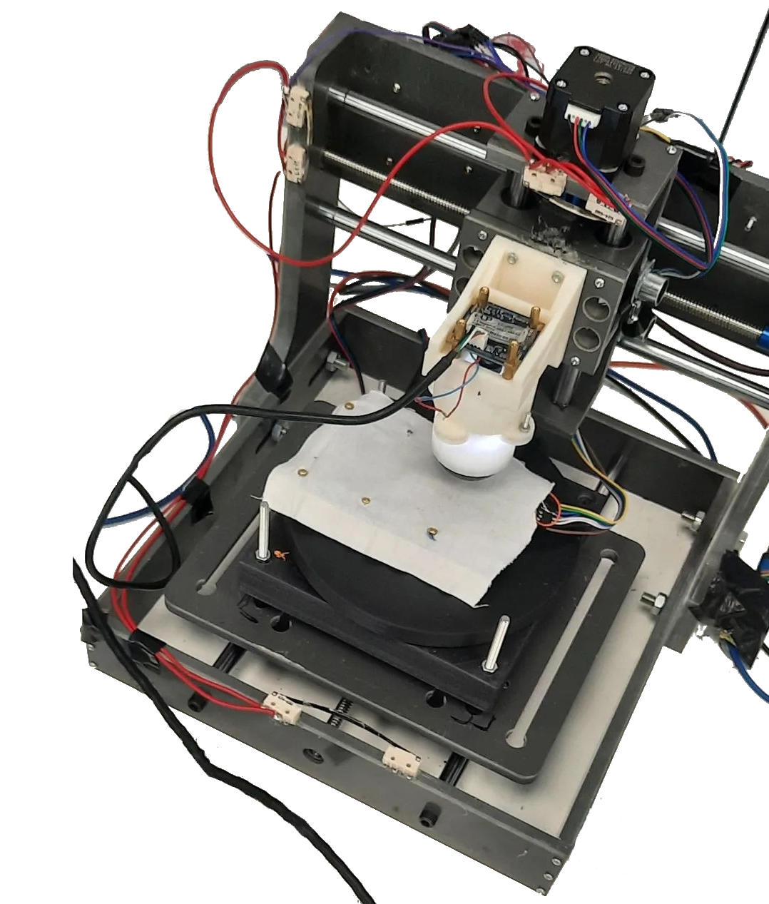
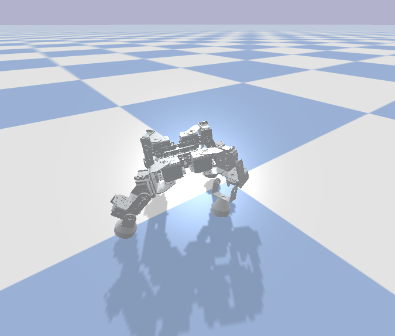
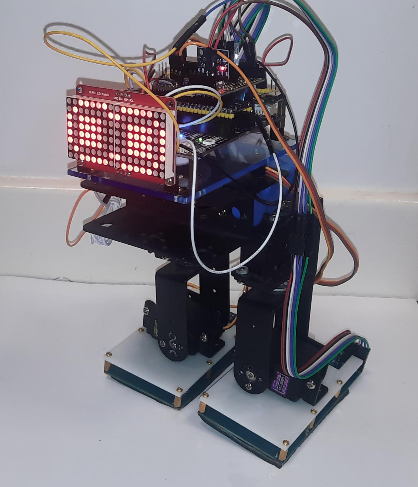
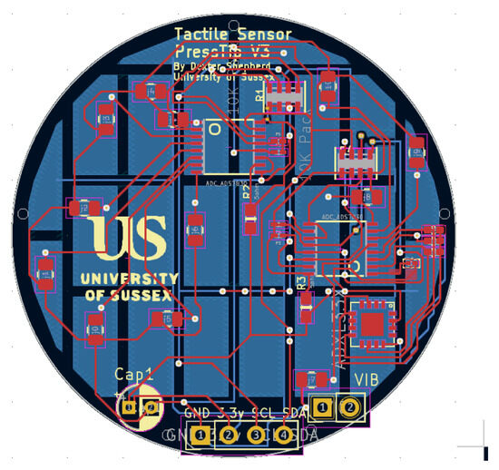
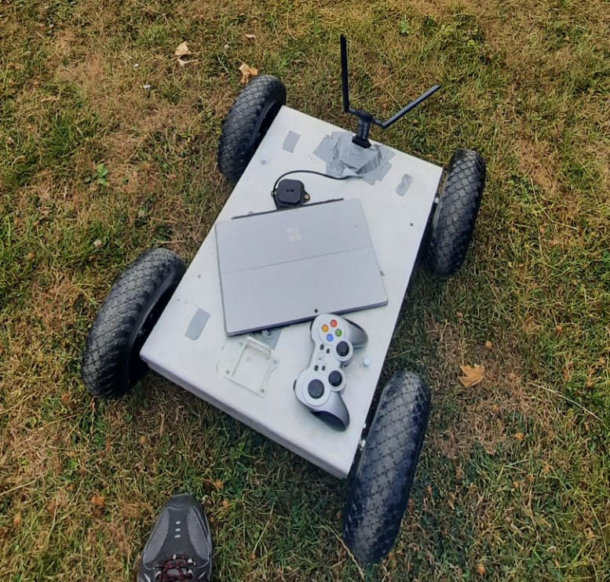

Development
Here is a collection of projects of significance I have undertaken. Each project provides overviews of the key points, but more detail can be found in published work, as linked in the pages.
| Texture and friction classifiction
A comparison between the two types of tactile sensors we have worked on |
 |
|---|---|
|  | Quadruped evolution
Project for creating a CAD quadruped from scratch and evolving gait controllers |
| Tactile Biped
Using the PressTip foot sensor, we were able to gather a dataset of poses and train a model to recognise its 3D orientation based on tactile readings |
 |
|  | PressTip multimodal sensor
The construction of the PressTip sensor, an electrical multimodal tactile sensor. |
| TacTip construction
The TacTip sensor construction and experimentation across various designs. |
.png)
|
|  | GPS Ant robot
This project worked on constructing a large chassis that could be used for outdoor exploration to test ant inspired algorithms. This project was part of a research assistant role |
| Bio-Inspired Navigation for Varied Terrain
This project uses the Wheg chassis developed in previous projects, however investigates aspects of autonomous navigation behaviours for traversing complex terrain. |

|

|
Deep learning for autonomous navigation on a small robots
This project was part of the University of Sussex Junior Research Associate scheme |
| Genetic algorithm robot walking optimization
Genetic Algorithms use random mutations to within a Genotype which is assessed using a fitness function. In this case fitness being the Genotype which walks the best. |

|

|
Exploring planetary terrain
In this project we explore different hardware options available for space exploration This started as a tracked rover controlled via a network. |
| Gathering train data
We devised an experiment to gather more training data for my own bot, and see how current bots register data. We were not overly pleased with the result. |

|

|
Beginning
Teaching myself to code and making voice recognition self learning chatbots |